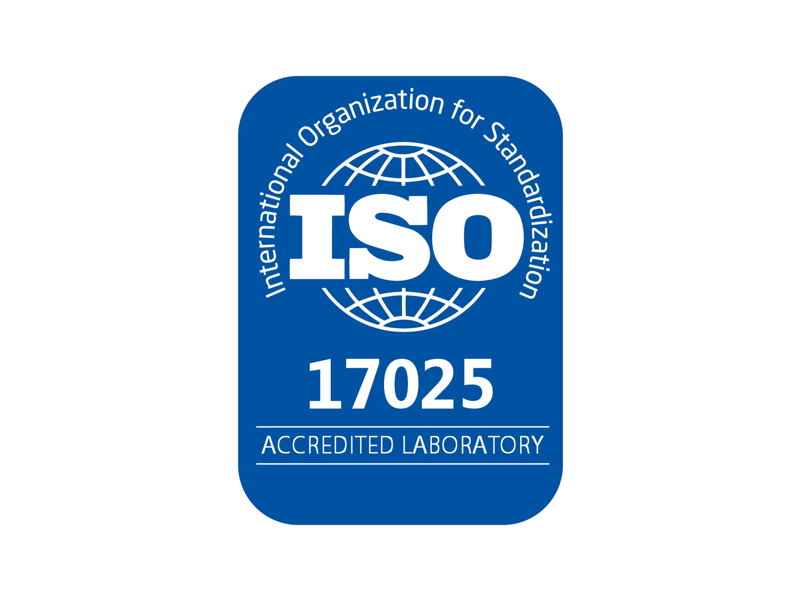
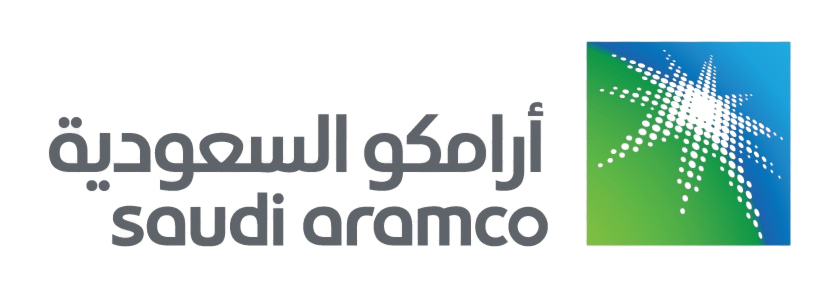
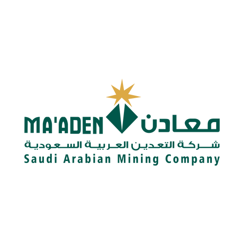
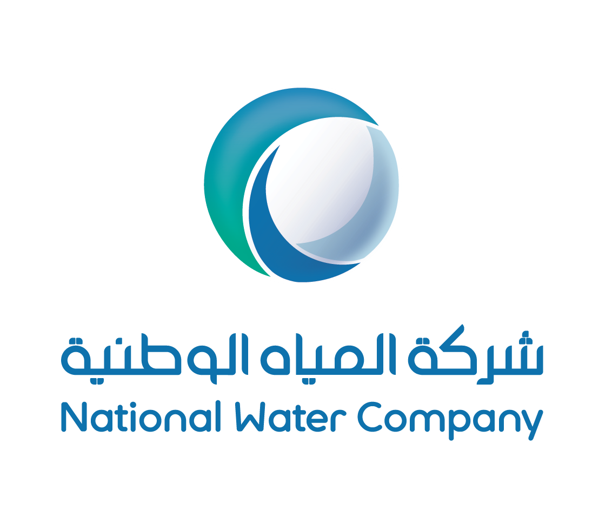
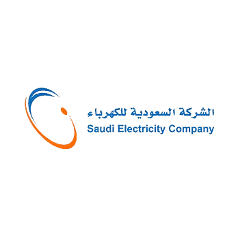
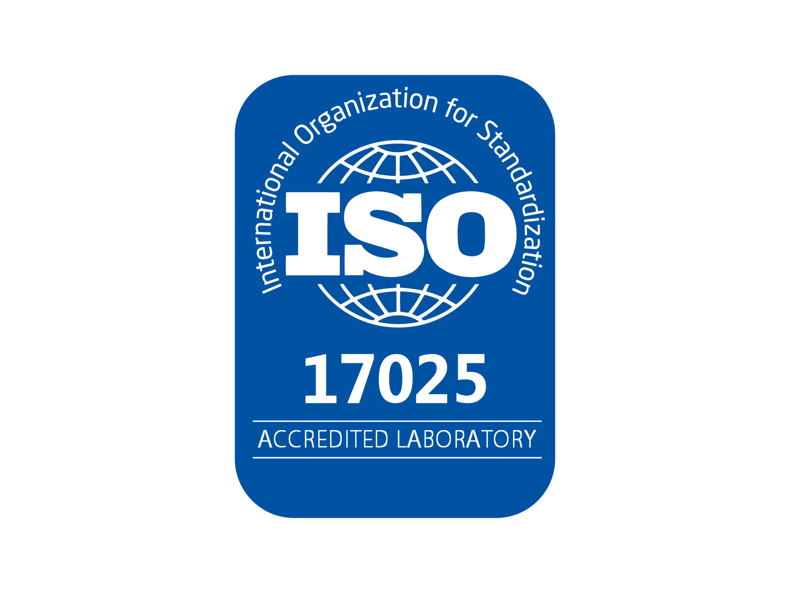
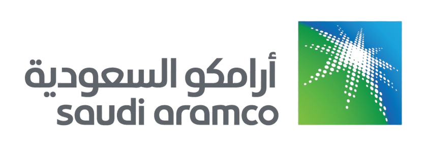
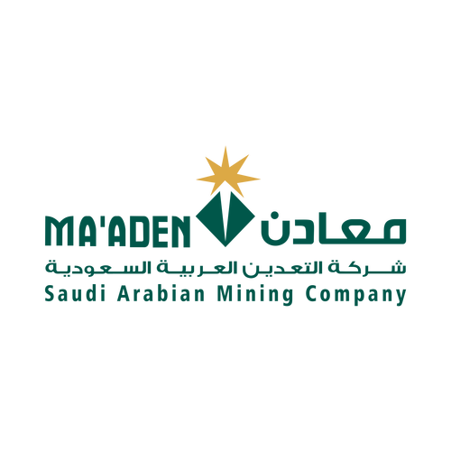
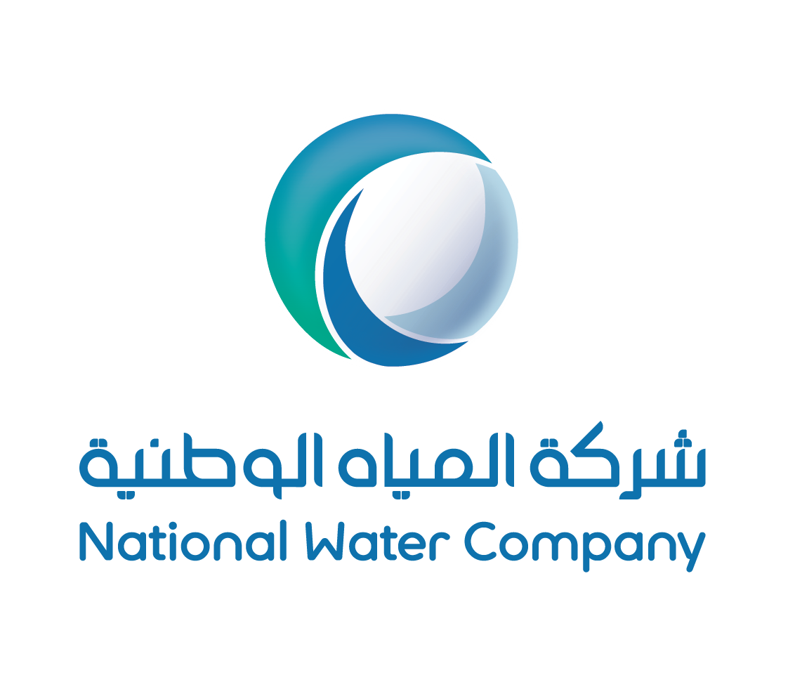
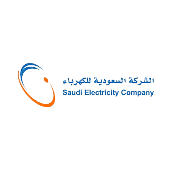

Services
At Saden, we offer a comprehensive range of services in concrete testing, soil work, and geotechnical studies, ensuring your project is built on strong and sustainable foundations.
Geotechnical Studies
Geotechnical studies aim to evaluate the properties of the land and soil to ensure the safety and sustainability of infrastructure and construction projects.
Learn MoreHydrological Studies
Hydrological studies involve collecting and analyzing water data to understand its flow, estimate water resources, and analyze risks, supporting water resource management and flood prevention structures.
Learn MoreGeophysical Studies
Geophysical studies aim to understand the physical properties of the earth using modern techniques to analyze geological and geophysical changes, helping to predict natural hazards and support construction and engineering planning.
Learn MoreGeological Studies
We offer specialized geological studies to analyze the earth's crust and terrain using modern techniques to support excavation, planning, construction, and address geological risks.
Learn MoreMining Studies
Mining studies focus on extracting minerals from the earth, including site exploration, process design, and environmental and safety management, supporting industries and enhancing sustainability and the economy.
Learn MoreSurveying
Surveying involves measuring and analyzing geographic and spatial information, supporting multiple industries from construction to urban planning.
Learn MoreMaterial Quality Testing
Our company provides high-quality testing and analysis services for engineering materials to ensure the safety and sustainability of infrastructure projects, with a focus on accurate and reliable reporting.
Learn MoreConcrete Testing
Concrete testing includes procedures to evaluate the quality of concrete and ensure compliance with standards, such as compression, bending, tensile, density, absorption, and erosion tests, ensuring its strength and sustainability in infrastructure projects.
Learn MoreAsphalt Testing
Asphalt testing aims to evaluate its quality and performance in road layers, including stability, homogeneity, density, erosion resistance, adhesion, and fatigue tests to ensure compliance with standards and sustainability.
Learn MoreProjects
We are proud to offer our services through our branches spread across Saudi Arabia, where we are committed to delivering the highest quality in every location. Additionally, we are pleased to offer our services through our branch in Egypt, allowing us to meet the needs of our clients in the Arab region with efficiency and professionalism.
- All
- Geotechnical Studies
- Hydrological Studies
- Geophysical Studies
- Geological Studies
- Mining Studies
- Surveying Works
- Asphalt Testing
Our Partners
We highly value our partners and consider our collaboration essential for enhancing our services and consistently delivering excellence. Your insights help us better understand your needs and improve the quality of our partnership.
Accreditations and Certifications
We take pride in our accreditations and certifications, ensuring the highest standards in geological consultancy.
 








